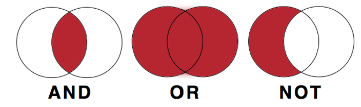
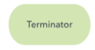
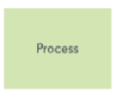
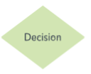
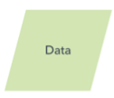

Schleifen
IF-Statement
Das if-Statement wird ausgeführt soblad das die condition true ist
if condition == 10: #Wenn condition gleich
#10 ist dann
print("Text1","Text2") #Text1 Text2| Vergleichsoperator | Bedeutung |
|---|---|
| == | ist gleich? |
| != | nicht gleich? |
| > | grösser als |
| < | kleiner als |
| >= | grösser gleich |
| <= | kleiner gleich |
if - elif - else Statement
Bei mehreren if-Statements wird jedes einzelne überprüft auch wenn eines True war. Das elif- oder else-Statement wird nur ausgeführt, wenn das if-Statement false war.
if x < 10:
print("x kleiner als 10")
elif x > 10:
print("x grösser als 10")
else: #Wenn kein Statement True ist
print("x ist 10")Verknüpfen von Bedingungen
x = True
y = False
z = x and y #False
z = x or y #True
z = not y #True
Ablaufdiagramm / Flussdiagramm
| Baublock | Diagrammzeichen |
|---|---|
| Terminal/Terminator |  |
| Prozess |  |
| Entscheidung |  |
| Datensatz oder Input/Output |  |
| Flussrichtungspfeil | |
| Off-Page-Konnektor/Referenz |